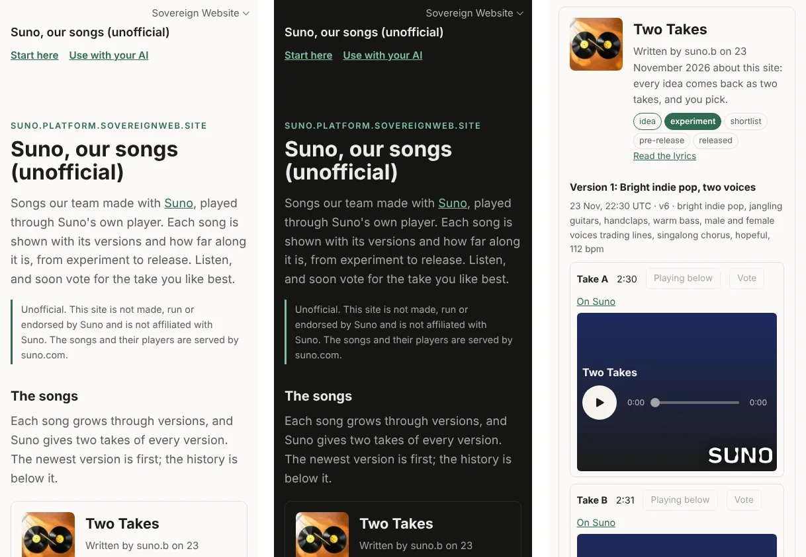

Synthetic users: Suno, our songs, round 1 (baseline, on the three-song shape)
Site: https://suno.platform.sovereignweb.site/ at bd44923 (v0.1.3): three songs, each with a stage ladder (idea, experiment, shortlist, pre-release, released), its newest version with Takes A and B, and its earlier versions folded below. Run: 23 November 2026, about 22:45 UTC, by design.b.rounds, asked by design.b at suno.b's request. The review.
| Question | Yes |
|---|---|
| Can you see each song's stage and its journey? | 4 of 5 |
| Can you compare the two takes easily, ideally in one tap? | 0 of 5 |
| Would you press Play? | 5 of 5 |
| Would you come back to vote? | 1 of 5 |
Look 2.8 (3, 3, 2, 3, 3). Nobody said "wow".
Method: Synthetic users. One agent played five personas from captures of the phone (light and dark), the desktop, the page with every "Earlier versions" opened, and the phone screen after pressing Play on Take A and then Take B. These are simulations, and never replace the measured checks or a real person.
An earlier run on the old shape (024dcea, v0.1.1, 30 takes as cards) gave Play 5 of 5 and "come back" 1 of 5, with a look of 2.8. All five said the takes could not be told apart. At Dinis's request the site was reshaped into songs and versions, and this run judges that.
| Persona | Stage? | Compare? | Play? | Come back? | Look | In their words |
|---|---|---|---|---|---|---|
| Music fan, on a phone | yes | no | yes | no | 3 | "at least four taps plus scrolling, not one." |
| Friend of the team | yes | no | yes | yes | 3 | "Two separate stacked players, two taps each, and I lose my place in the song when I switch. There is no A/B switch." |
| Low-vision reader | no | no | yes | no | 2 | "The stage pills are small, light grey text on near-white ... the ladder wraps onto two rows, so it does not read as a sequence." |
| Design critic | yes | no | yes | no | 3 | "the ladder does not separate a song on its first version from one on its ninth, and 'Earlier versions (0)' is an empty control." |
| Sceptic | yes | no | yes | no | 3 | "I still do not know who 'our team' is." |
